Chọn kiểu dáng: Lồng chứa · Đèn báo · Nắp lỗ
Đây là hình đề xuất, game chưa có 3 món này. Hình được vẽ bằng đúng bộ vẽ và ánh sáng của game; thùng carton là hình thật đang có trong game. Xe, tay máy, băng chuyền, sàn nâng hiện có không đổi gì.
L-b D-a N-a (Lồng B, Đèn A, Nắp A). Muốn sửa chi tiết (màu, cao thấp, bánh xe...) cứ ghi thêm bằng lời.
1. Lồng chứa (L)
Lồng đứng dưới lỗ thả, hứng thùng thật rơi xuống; gầm cao 0,35 m để xe kéo chui vào. Kích thước trong hình: lòng 0,8 m, thành cao 1 m (có thể đổi sau khi đo). Chỗ thùng nằm trong hình là xếp tay để minh hoạ; trong game thùng rơi tự do nên sẽ lộn xộn hơn.

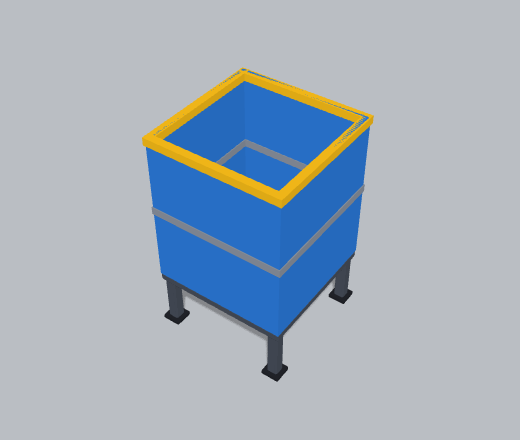
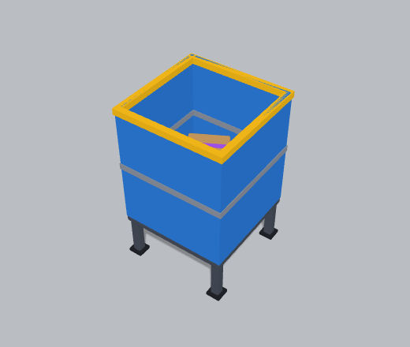
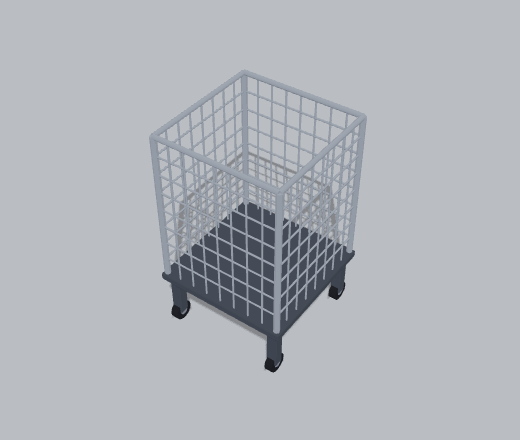
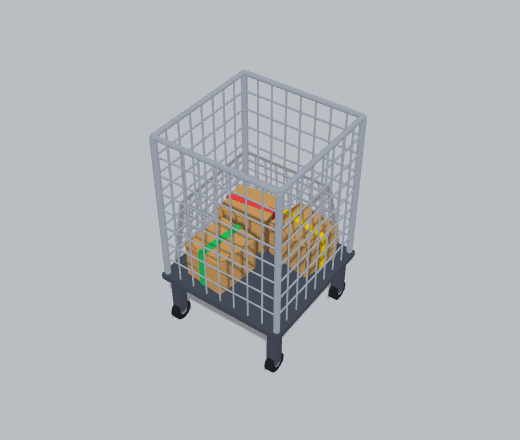
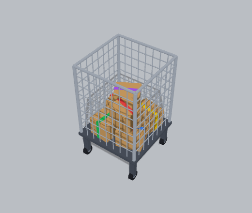
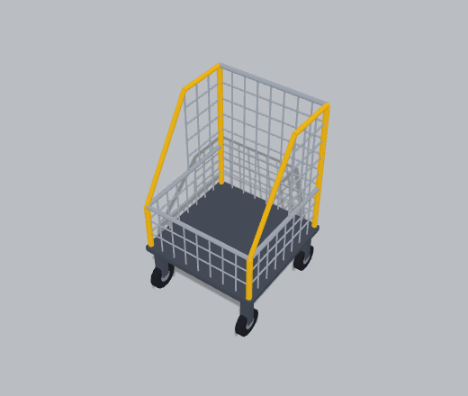
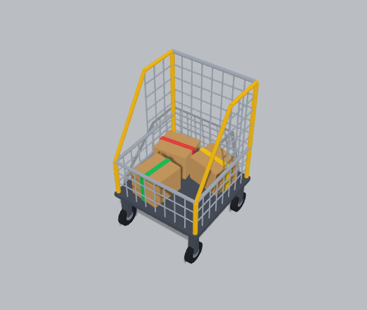
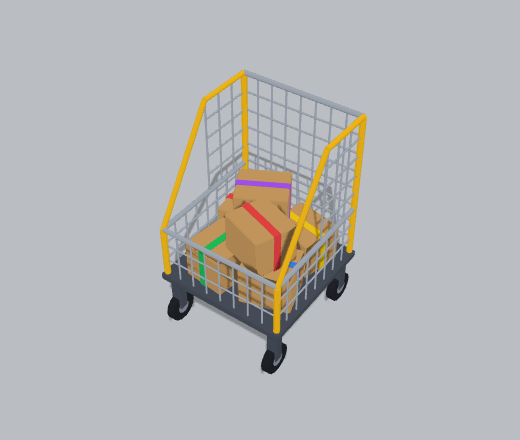
2. Đèn báo của lỗ (D)
Đèn đứng trên sàn nâng, cạnh lỗ. Xanh = lồng còn chỗ · Vàng = sắp đầy (5 thùng) · Đỏ = đầy (6 thùng), lỗ bị khoá.
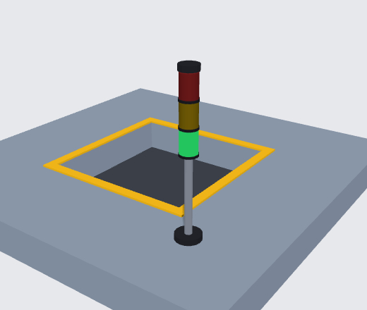
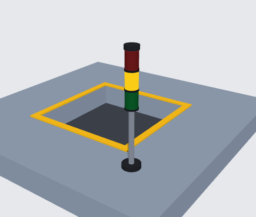
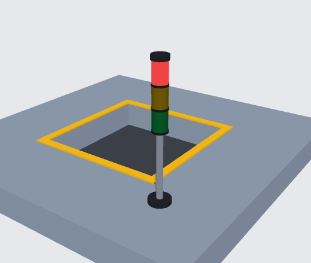
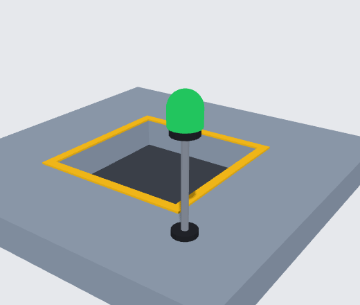
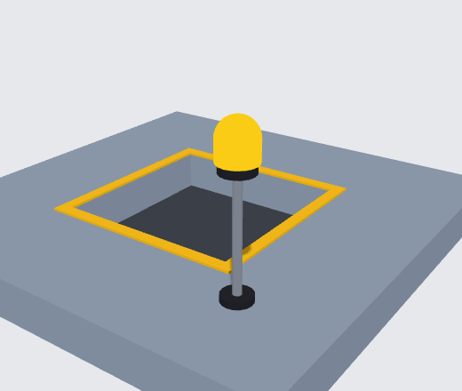
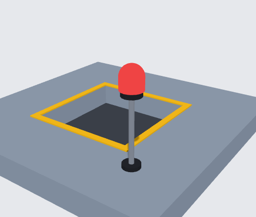
3. Nắp lỗ (N)
Khi lồng đầy, lỗ được đậy lại để xe không thả thêm thùng. Lỗ rộng 0,94 m, viền vàng là viền lỗ đang có trong game.
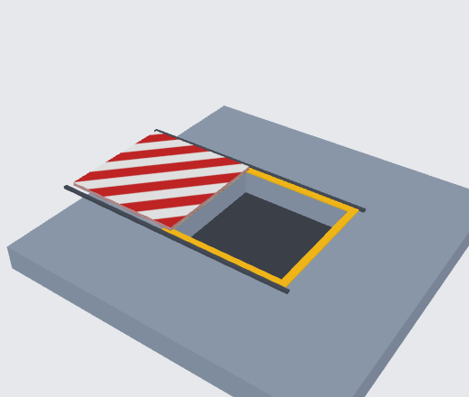
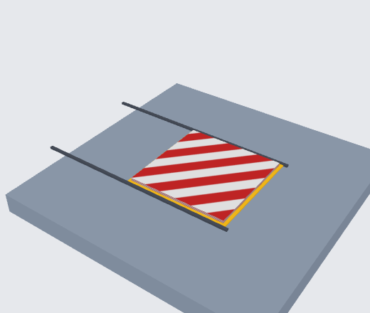
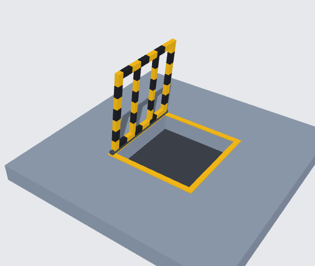
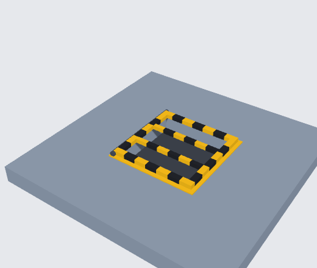
Ghi chú thật: đây là ảnh tĩnh chụp từ bản vẽ 3D, chưa phải vật trong game và chưa có chuyển động. Sau khi anh/chị chọn, kiểu được chọn mới được làm thành mảnh ghép thật.